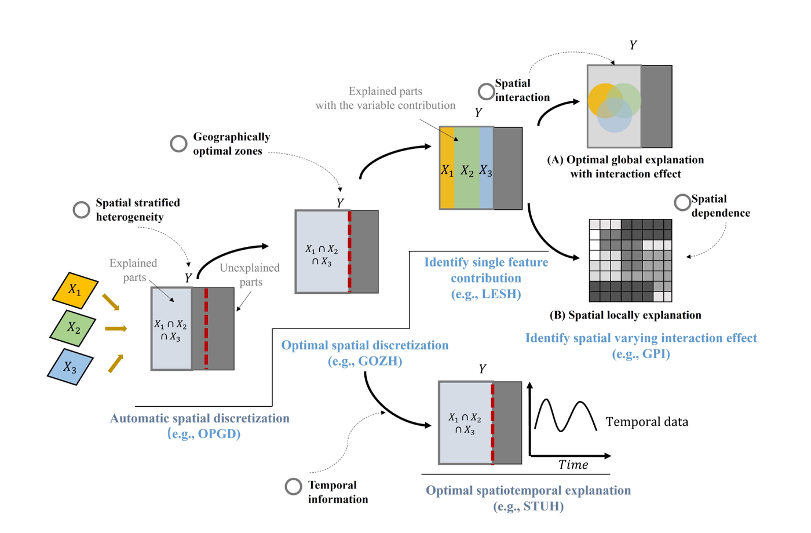
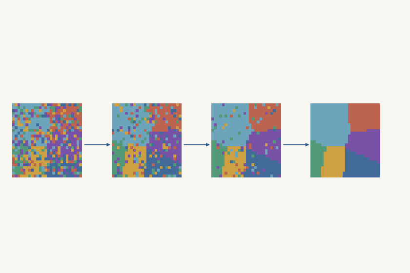

Research
My research asks three questions about spatial data and GeoAI: how far we can trust what a model tells us, what processes lie behind the patterns we see, and whether AI can help us discover better geospatial methods.
Carrying trust through the whole chain of spatial analysis, from the data and the model to its outputs and how they are communicated to the public. Core work includes GeoConformal prediction (GeoCP) for model-agnostic spatial uncertainty, GeoXCP for uncertainty in spatial explanations, GeoSIMCP for nonstationary processes, WBCP for risk under covariate shift, and visual analytics that show how reliable each prediction is, and where.

Telling pattern from noise by recovering the processes behind spatial data: how geographical variables interact (GOZH, Robust GOZH, LESH, GPI), where spatial regimes shift (RegimeBench), how spatial structure shapes predictability, and how to predict accurately from small samples (GHM, MSAM).

Large language model agents that propose, test, and refine geospatial models and algorithms. Flagship work includes GeoEvolve (multi-agent LLMs for geospatial model discovery) and SEGA (self-evolving geospatial algorithms, with a case study on spatial regime discovery).

With collaborators, these methods are applied to land use, population health, human mobility, urban systems, and remote sensing. See application papers on the publications page.
Doctoral research at TUM focused on spatial association modeling, spatial interpolation, and multi-sensor data fusion. Earlier work at PKU addressed population density modeling and remote sensing. See the publications page for a full list.